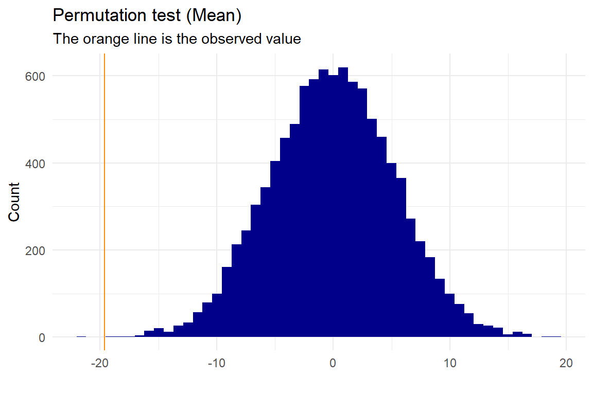
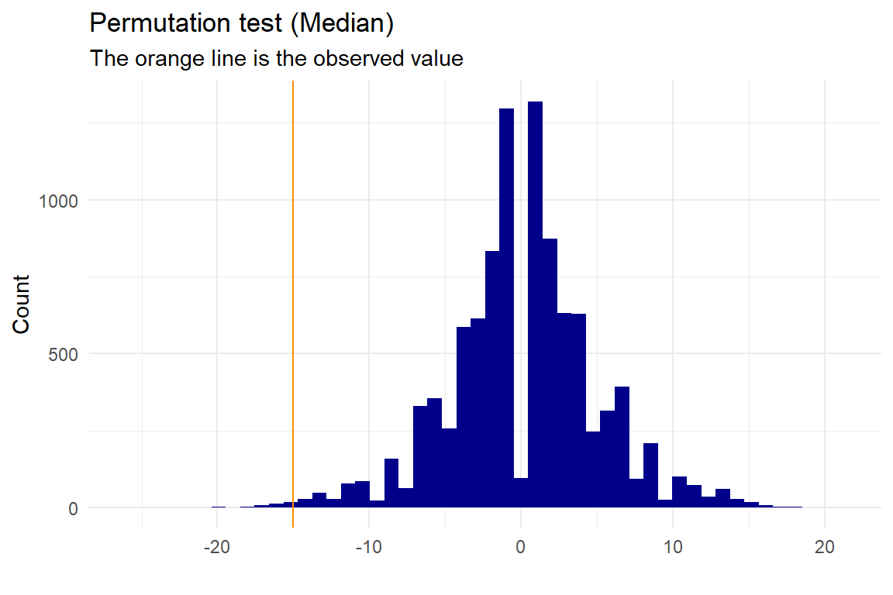
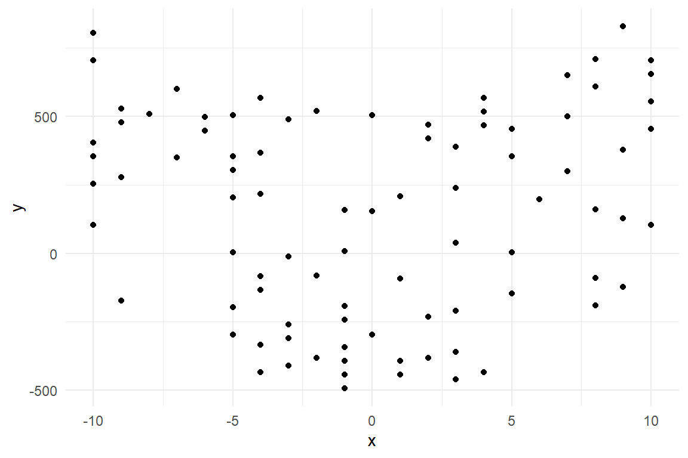
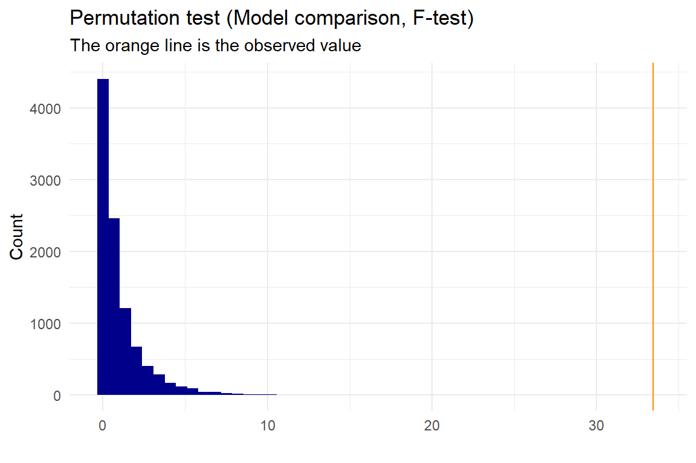
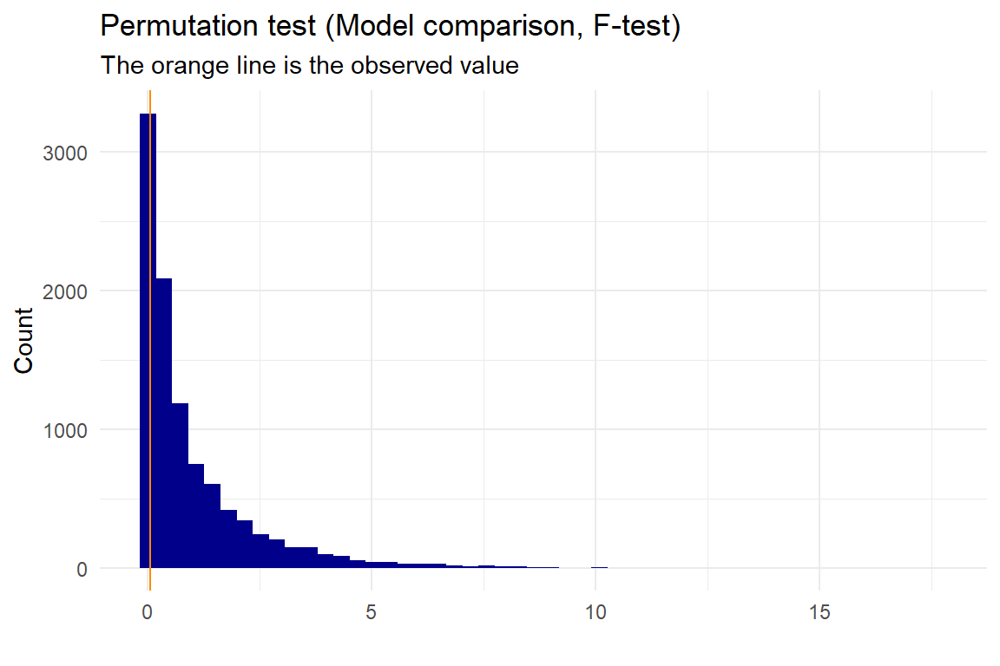

Permutation1.RmdThe purpose of this package is to have some nice, userfriendly functions, that does permutations in a way that is easy to understand. All of them gives a plot and a statistical value plus a p-value.
All the functions need a dataset (in dataframe format) with data that you want to test somehow with permutation tests. The functions also have the possibility of making plots showing the permuted null-distribution including the observed value. We recommend installing ggplot2 (part of the tidyverse as well) for this, if you want nice plots and changing the gg_plot variable to TRUE. We have different functions depending on what statistical value you want to test, and here we have examples of how to use them with simple random datasets.
This dataset is not normally distributed, and thereby it would make sense to run a permutation test to check if the groups have the same mean or median.
for testing if the means of the same groups are significantly different: Here the null-distribution made by the permutation function will be distributed around 0.
p <- permutation_mean(test,"names","value","Group1","Group2", no_perm=10000, plot=T, gg_plot=ggplot_status, progress=FALSE)
##
## Permutation Test (Mean)
##
## data: Permutation for group: Group1 and Group2
## p-value = 3e-04
## sample estimates:
## Mean first group Mean second group Observed mean difference
## 49.30 68.92 -19.62Here we get a p-value of \(2.9997\times 10^{-4}\), and with a 5% significance level we can reject that the mean of the two groups are the same. The ggplot_status is TRUE or FALSE depending on whether or not you have ggplot2 installed on your computer.
The p-value is calculated as:
\[p-val = \frac{\sum (|PermutedValue|\ge |ObservedValue|)+1}{\#Permutations+1}\]
We add one as a precaution, since we do not know the value of the next permutation and thereby always should expect the “next” value to be at least as extreme as the observed. The test is two-sided
It is possible to acces the different values from the permutations test:
## p-value
## 0.00029997for testing if the median of the same groups are significantly different: Here the null-distribution made by the permutation function will be distributed around 0. This works the same way as the permutations_mean() function
p <- permutation_median(test,"names","value","Group1","Group2", no_perm=10000, plot=T, gg_plot=ggplot_status, progress=FALSE)
##
## Permutation Test (Median)
##
## data: Permutation for group: Group1 and Group2
## p-value = 0.007599
## sample estimates:
## Median first group Median second group
## 53 68
## Observed median difference
## -15The median is also significantly different in the two groups with a significance level of 5%.
set.seed(0)
x <- sample(c(-10:10), 100, replace=T)
y <- 4*x^2+3+50*sample(c(-10:10), 100, replace=T)
data <- data.frame(x,y)We know that a qudratic model, \(x^2\), should fit the data the best, but it is allways a good ide to look at the data making a simple plot, since it is nice to see the dependence between the variables: 
Here we can actually see, that there probably is a quadratic depencence between x and y.
for testing if the quadratic model fits the data significantly better than the linear model Here the null-distribution will mimic an F-distribution
p <- permutation_lm(data, "x","y","quadratic", "linear", plot=T, gg_plot=ggplot_status, progress=FALSE)
##
## Permutation Test (ANOVA) for quadratic and linear models
##
## data: Permutation for predictor x and response y
## p-value = 9.999e-05
## sample estimates:
## Observed F value between models
## 33.45256We also get an extremely low p-value, that tells us, that we reject the linear model being as good as the quadratic, and we would therefore expect the quadratic model to fit our data better than the linear model.
Here the p-value is calculated as:
\[p-val = \frac{\sum (PermutedValue\ge ObservedValue)+1}{\#Permutations+1}\] Since it is an F-distributed null-model, all values will be above 0, and we do not need to take the aboslute values.
We could also check if the cubic model works better than the quadratic model then:
p <- permutation_lm(data, "x","y","cubic","quadratic", plot=T, gg_plot=ggplot_status, progress=FALSE)
##
## Permutation Test (ANOVA) for cubic and quadratic models
##
## data: Permutation for predictor x and response y
## p-value = 0.8302
## sample estimates:
## Observed F value between models
## 0.04548759Here we can see, that the p-value is high, and we would therefore not expect the cubic model to be better.